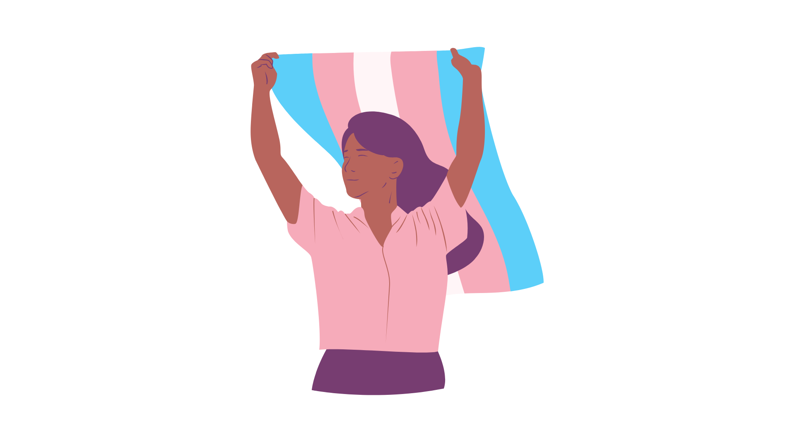

Sobre
"Serei A" surgiu como um projeto de pesquisa desenvolvido no Ensino Médio Senac pelo estudante Theo Dominique Lima.
A plataforma recebeu esse nome em homenagem à música de Linn da Quebrada, por seu significado de existência e resistência enquanto pessoa trans; a intenção da escolha era de valorizar uma artista brasileira que também faz parte da comunidade trans.